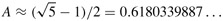
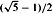
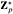
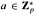
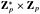
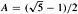

|
|
< Day Day Up > |
|
In this section, we discuss some issues regarding the design of good hash functions and then present three schemes for their creation. Two of the schemes, hashing by division and hashing by multiplication, are heuristic in nature, whereas the third scheme, universal hashing, uses randomization to provide provably good performance.
A good hash function satisfies (approximately) the assumption of simple uniform hashing: each key is equally likely to hash to any of the m slots, independently of where any other key has hashed to. Unfortunately, it is typically not possible to check this condition, since one rarely knows the probability distribution according to which the keys are drawn, and the keys may not be drawn independently.
Occasionally we do know the distribution. For example, if the keys are known to be random real numbers k independently and uniformly distributed in the range 0 ≤ k < 1, the hash function
h(k) = ⌊km⌋
satisfies the condition of simple uniform hashing.
In practice, heuristic techniques can often be used to create a hash function that performs well. Qualitative information about distribution of keys may be useful in this design process. For example, consider a compiler's symbol table, in which the keys are character strings representing identifiers in a program. Closely related symbols, such as pt and pts, often occur in the same program. A good hash function would minimize the chance that such variants hash to the same slot.
A good approach is to derive the hash value in a way that is expected to be independent of any patterns that might exist in the data. For example, the "division method" (discussed in Section 11.3.1) computes the hash value as the remainder when the key is divided by a specified prime number. This method frequently gives good results, assuming that the prime number is chosen to be unrelated to any patterns in the distribution of keys.
Finally, we note that some applications of hash functions might require stronger properties than are provided by simple uniform hashing. For example, we might want keys that are "close" in some sense to yield hash values that are far apart. (This property is especially desirable when we are using linear probing, defined in Section 11.4.) Universal hashing, described in Section 11.3.3, often provides the desired properties.
Most hash functions assume that the universe of keys is the set N = {0, 1, 2, ...} of natural numbers. Thus, if the keys are not natural numbers, a way is found to interpret them as natural numbers. For example, a character string can be interpreted as an integer expressed in suitable radix notation. Thus, the identifier pt might be interpreted as the pair of decimal integers (112, 116), since p = 112 and t = 116 in the ASCII character set; then, expressed as a radix-128 integer, pt becomes (112·128)+116 = 14452. It is usually straightforward in an application to devise some such method for interpreting each key as a (possibly large) natural number. In what follows, we assume that the keys are natural numbers.
In the division method for creating hash functions, we map a key k into one of m slots by taking the remainder of k divided by m. That is, the hash function is
For example, if the hash table has size m = 12 and the key is k = 100, then h(k) = 4. Since it requires only a single division operation, hashing by division is quite fast.
When using the division method, we usually avoid certain values of m. For example, m should not be a power of 2, since if m = 2p, then h(k) is just the p lowest-order bits of k. Unless it is known that all low-order p-bit patterns are equally likely, it is better to make the hash function depend on all the bits of the key. As Exercise 11.3-3 asks you to show, choosing m = 2p - 1 when k is a character string interpreted in radix 2p may be a poor choice, because permuting the characters of k does not change its hash value.
A prime not too close to an exact power of 2 is often a good choice for m. For example, suppose we wish to allocate a hash table, with collisions resolved by chaining, to hold roughly n = 2000 character strings, where a character has 8 bits. We don't mind examining an average of 3 elements in an unsuccessful search, so we allocate a hash table of size m = 701. The number 701 is chosen because it is a prime near 2000/3 but not near any power of 2. Treating each key k as an integer, our hash function would be
h(k) = k mod 701.
The multiplication method for creating hash functions operates in two steps. First, we multiply the key k by a constant A in the range 0 < A < 1 and extract the fractional part of kA. Then, we multiply this value by m and take the floor of the result. In short, the hash function is
h(k) = ⌊m(kA mod 1)⌋,
where "k A mod 1" means the fractional part of kA, that is, kA - ⌊kA⌋.
An advantage of the multiplication method is that the value of m is not critical. We typically choose it to be a power of 2 (m = 2p for some integer p) since we can then easily implement the function on most computers as follows. Suppose that the word size of the machine is w bits and that k fits into a single word. We restrict A to be a fraction of the form s/2w, where s is an integer in the range 0 < s < 2w. Referring to Figure 11.4, we first multiply k by the w-bit integer s = A · 2w. The result is a 2w-bit value r12w + r0, where r1 is the high-order word of the product and r0 is the low-order word of the product. The desired p-bit hash value consists of the p most significant bits of r0.
Although this method works with any value of the constant A, it works better with some values than with others. The optimal choice depends on the characteristics of the data being hashed. Knuth [185] suggests that
| (11.2) |  |
is likely to work reasonably well.
As an example, suppose we have k = 123456, p = 14, m = 214 = 16384, and w = 32. Adapting Knuth's suggestion, we choose A to be the fraction of the form s/232 that is closest to , so that A = 2654435769/232. Then k · s = 327706022297664 = (76300 · 232) + 17612864, and so r1 = 76300 and r0 = 17612864. The 14 most significant bits of r0 yield the value h(k) = 67.
If a malicious adversary chooses the keys to be hashed by some fixed hash function, then he can choose n keys that all hash to the same slot, yielding an average retrieval time of Θ(n). Any fixed hash function is vulnerable to such terrible worst-case behavior; the only effective way to improve the situation is to choose the hash function randomly in a way that is independent of the keys that are actually going to be stored. This approach, called universal hashing, can yield provably good performance on average, no matter what keys are chosen by the adversary.
The main idea behind universal hashing is to select the hash function at random from a carefully designed class of functions at the beginning of execution. As in the case of quicksort, randomization guarantees that no single input will always evoke worst-case behavior. Because of the randomization, the algorithm can behave differently on each execution, even for the same input, guaranteeing good average-case performance for any input. Returning to the example of a compiler's symbol table, we find that the programmer's choice of identifiers cannot now cause consistently poor hashing performance. Poor performance occurs only when the compiler chooses a random hash function that causes the set of identifiers to hash poorly, but the probability of this situation occurring is small and is the same for any set of identifiers of the same size.
Let ℋ be a finite collection of hash functions that map a given universe U of keys into the range {0, 1, ..., m - 1}. Such a collection is said to be universal if for each pair of distinct keys k, l ∈ U , the number of hash functions h ∈ ℋ for which h(k) = h(l) is at most |ℋ| /m. In other words, with a hash function randomly chosen from ℋ, the chance of a collision between distinct keys k and l is no more than the chance 1/m of a collision if h(k) and h(l) were randomly and independently chosen from the set {0, 1, ..., m - 1}.
The following theorem shows that a universal class of hash functions gives good average-case behavior. Recall that ni denotes the length of list T[i].
Suppose that a hash function h is chosen from a universal collection of hash functions and is used to hash n keys into a table T of size m, using chaining to resolve collisions. If key k is not in the table, then the expected length E[nh(k)] of the list that key k hashes to is at most α. If key k is in the table, then the expected length E[nh(k)] of the list containing key k is at most 1 + α.
Proof We note that the expectations here are over the choice of the hash function, and do not depend on any assumptions about the distribution of the keys. For each pair k and l of distinct keys, define the indicator random variable Xkl = I{h(k) = h(l)}. Since by definition, a single pair of keys collides with probability at most 1/m, we have Pr{h(k) = h(l)} ≤ 1/m, and so Lemma 5.1 implies that E[Xkl] ≤ 1/m.
Next we define, for each key k, the random variable Yk that equals the number of keys other than k that hash to the same slot as k, so that
Thus we have
The remainder of the proof depends on whether key k is in table T.
If k ∉ T, then nh(k) = Yk and |{l : l ∈ T and l ≠ k}| = n. Thus E[nh(k)] = E[Yk] ≤ n/m = α.
If k ∈ T , then because key k appears in list T[h(k)] and the count Yk does not include key k, we have nh(k) = Yk + 1 and |{l : l ∈ T and l ≠ k}| = n - 1. Thus E[nh(k)] = E[Yk] + 1 ≤ (n - 1)/m + 1 = 1 + α - 1/m < 1 + α.
The following corollary says universal hashing provides the desired payoff: it is now impossible for an adversary to pick a sequence of operations that forces the worst-case running time. By cleverly randomizing the choice of hash function at run time, we guarantee that every sequence of operations can be handled with good expected running time.
Using universal hashing and collision resolution by chaining in a table with m slots, it takes expected time Θ(n) to handle any sequence of n INSERT, SEARCH and DELETE operations containing O(m) INSERT operations.
Proof Since the number of insertions is O(m), we have n = O(m) and so α = O(1). The INSERT and DELETE operations take constant time and, by Theorem 11.3, the expected time for each SEARCH operation is O(1). By linearity of expectation, therefore, the expected time for the entire sequence of operations is O(n).
It is quite easy to design a universal class of hash functions, as a little number theory will help us prove. You may wish to consult Chapter 31 first if you are unfamiliar with number theory.
We begin by choosing a prime number p large enough so that every possible key k is in the range 0 to p - 1, inclusive. Let Zp denote the set {0, 1, ..., p - 1}, and let  denote the set {1, 2, ..., p - 1}. Since p is prime, we can solve equations modulo p with the methods given in Chapter 31. Because we assume that the size of the universe of keys is greater than the number of slots in the hash table, we hav p > m.
We now define the hash function ha,b for any  and any b ∈ Zp using a linear transformation followed by reductions modulo p and then modulo m:
For example, with p = 17 and m = 6, we have h3,4(8) = 5. The family of all such hash functions is
Each hash function ha,b maps Zp to Zm. This class of hash functions has the nice property that the size m of the output range is arbitrary-not necessarily prime-a feature which we shall use in Section 11.5. Since there are p - 1 choices for a and there are p choices for b, there are p(p - 1) hash functions in ℋp,m.
The class ℋp,m of hash functions defined by equations (11.3) and (11.4) is universal.
Proof Consider two distinct keys k and l from Zp, so that k ≠ l. For a given hash function ha,b we let
|
r |
= |
(ak + b) mod p, |
|
s |
= |
(al + b) mod p. |
We first note that r ≠ s. Why? Observe that
r - s ≡ a(k - l) (mod p).
It follows that r ≠ s because p is prime and both a and (k - l) are nonzero modulo p, and so their product must also be nonzero modulo p by Theorem 31.6. Therefore, during the computation of any ha,b in ℋp,m, distinct inputs k and l map to distinct values r and s modulo p; there are no collisions yet at the "mod p level." Moreover, each of the possible p(p - 1) choices for the pair (a, b) with a ≠ 0 yields a different resulting pair (r, s) with r ≠ s, since we can solve for a and b given r and s:
|
a |
= |
((r - s)((k - l)-1 mod p)) mod p, |
|
b |
= |
(r - ak) mod p, |
where ((k - l)-1 mod p) denotes the unique multiplicative inverse, modulo p, of k - l. Since there are only p(p - 1) possible pairs (r, s) with r ≠ s, there is a one-to-one correspondence between pairs (a, b) with a ≠ = 0 and pairs (r, s) with r ≠ s. Thus, for any given pair of inputs k and l, if we pick (a, b) uniformly at random from , the resulting pair (r, s) is equally likely to be any pair of distinct values modulo p.
It then follows that the probability that distinct keys k and l collide is equal to the probability that r ≡ s (mod m) when r and s are randomly chosen as distinct values modulo p. For a given value of r, of the p - 1 possible remaining values for s, the number of values s such that s ≠ r and s ≡ r (mod m) is at most
|
⌈p/m⌉ - 1 |
≤ |
((p + m - 1)/m) - 1 (by inequality (3.7)) |
|
= |
(p - 1)/m. |
The probability that s collides with r when reduced modulo m is at most ((p - 1)/m)/(p - 1) = 1/m.
Therefore, for any pair of distinct values k, l ∈ Zp,
Pr{ha,b(k) = ha,b(l)} ≤ 1/m,
so that ℋp,m is indeed universal.
Suppose we wish to search a linked list of length n, where each element contains a key k along with a hash value h(k). Each key is a long character string. How might we take advantage of the hash values when searching the list for an element with a given key?
Suppose that a string of r characters is hashed into m slots by treating it as a radix-128 number and then using the division method. The number m is easily represented as a 32-bit computer word, but the string of r characters, treated as a radix-128 number, takes many words. How can we apply the division method to compute the hash value of the character string without using more than a constant number of words of storage outside the string itself?
Consider a version of the division method in which h(k) = k mod m, where m = 2p - 1 and k is a character string interpreted in radix 2p. Show that if string x can be derived from string y by permuting its characters, then x and y hash to the same value. Give an example of an application in which this property would be undesirable in a hash function.
Consider a hash table of size m = 1000 and a corresponding hash function h(k) = ⌊m(k A mod 1)⌋ for . Compute the locations to which the keys 61, 62, 63, 64, and 65 are mapped.
Define a family ℋ of hash functions from a finite set U to a finite set B to be ∈-universal if for all pairs of distinct elements k and l in U,
Pr {h(k) = h(l)} ≤ ∈,
where the probability is taken over the drawing of hash function h at random from the family ℋ. Show that an ∈-universal family of hash functions must have
Let U be the set of n-tuples of values drawn from Zp, and let B = Zp, where p is prime. Define the hash function hb : U → B for b ∈ Zp on an input n-tuple 〈a0, a1, ..., an-1〉 from U as
and let ℋ = {hb : b ∈ Zp}. Argue that ℋ is ((n - 1)/p)-universal according to the definition of ∈-universal in Exercise 11.3-5. (Hint: See Exercise 31.4-4.)
|
|
< Day Day Up > |
|